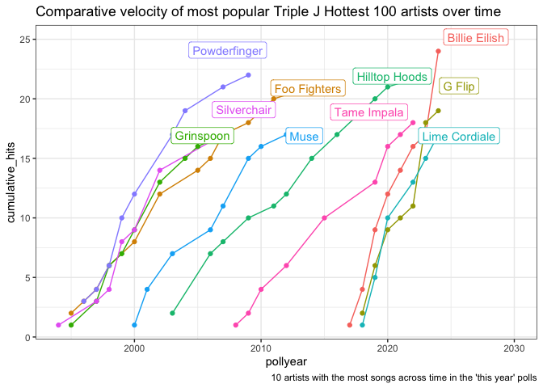

The goal of hottest100 is to provide a compendium of Triple J hottest 100 songs. Data is scraped from Triple J’s best 100 Australian songs and historic information on Wikipedia.
There are three data sets on artists, tracks, and polls.
Installation
You can install the development version of hottest100 from GitHub with:
# install.packages("pak")
pak::pak("katerobsau/hottest100")Data sets available
library(hottest100)
library(tibble)
library(dplyr)
#>
#> Attaching package: 'dplyr'
#> The following objects are masked from 'package:stats':
#>
#> filter, lag
#> The following objects are masked from 'package:base':
#>
#> intersect, setdiff, setequal, unionTracks
Triple J Hottest 100 Track Data - A dataset containing track-level data from the Triple J Hottest 100. A data.frame with one row per track, including variables:
- alltime: Logical; indicates if the entry is from an all-time chart specific year.
- artist: Character; name of the artist or band associated withtrack.
- country: Character; the country associated with the track/chart.
- id: Unique identifier for each track (within year)
- pollyear: Countdown poll year
- position: Chart position of the track.
- track: Title of the track or song.
- releaseyear: Original release year of the track.
as_tibble(tracks)
#> # A tibble: 4,200 × 8
#> alltime artist country id pollyear position releaseyear track
#> <lgl> <chr> <chr> <chr> <int> <int> <chr> <chr>
#> 1 FALSE Spiderbait Australia 1 1996 1 1996 Buy M…
#> 2 FALSE Tool USA 2 1996 2 1996 Stink…
#> 3 FALSE Ben Folds Five USA 3 1996 3 1996 Under…
#> 4 FALSE Butthole Surfers USA 4 1996 4 1996 Pepper
#> 5 FALSE Bush UK 5 1996 5 1996 Glyce…
#> 6 FALSE Powderfinger Australia 6 1996 6 1996 Pick …
#> 7 FALSE The Prodigy UK 7 1996 7 1996 Breat…
#> 8 FALSE Allen Ginsberg USA 8 1996 8 1996 Balla…
#> 9 FALSE Weezer USA 9 1996 9 1996 El Sc…
#> 10 FALSE 311 USA 10 1996 11 1996 Down
#> # ℹ 4,190 more rows
# What are the top 1 tracks not incuding the "alltime" counts
tracks |>
filter(
position == 1,
alltime == FALSE
) |>
arrange(pollyear) |>
select(
pollyear,
position,
track,
artist
)
#> pollyear position track
#> 1 1993 1 Asshole
#> 2 1994 1 Zombie
#> 3 1995 1 Wonderwall
#> 4 1996 1 Buy Me a Pony
#> 5 1997 1 No Aphrodisiac
#> 6 1998 1 Pretty Fly (For a White Guy)
#> 7 1999 1 These Days
#> 8 2000 1 My Happiness
#> 9 2001 1 Amazing
#> 10 2002 1 No One Knows
#> 11 2003 1 Are You Gonna Be My Girl?
#> 12 2004 1 Take Me Out
#> 13 2005 1 Wish You Well
#> 14 2006 1 One Crowded Hour
#> 15 2007 1 Knights of Cydonia
#> 16 2008 1 Sex on Fire
#> 17 2009 1 Little Lion Man
#> 18 2010 1 Big Jet Plane
#> 19 2011 1 Somebody That I Used to Know {ft. Kimbra}
#> 20 2012 1 Thrift Shop {ft. Wanz}
#> 21 2013 1 Riptide
#> 22 2014 1 Talk Is Cheap
#> 23 2015 1 Hoops
#> 24 2016 1 Never Be Like You {Ft. Kai}
#> 25 2017 1 HUMBLE.
#> 26 2018 1 Confidence
#> 27 2019 1 bad guy
#> 28 2020 1 Heat Waves
#> 29 2021 1 Elephant [triple j Like A Version 2021]
#> 30 2022 1 Say Nothing
#> 31 2023 1 Paint The Town Red
#> 32 2024 1 Good Luck, Babe!
#> artist
#> 1 Denis Leary
#> 2 The Cranberries
#> 3 Oasis
#> 4 Spiderbait
#> 5 The Whitlams
#> 6 The Offspring
#> 7 Powderfinger
#> 8 Powderfinger
#> 9 Alex Lloyd
#> 10 Queens of the Stone Age
#> 11 Jet
#> 12 Franz Ferdinand
#> 13 Bernard Fanning
#> 14 Augie March
#> 15 Muse
#> 16 Kings of Leon
#> 17 Mumford & Sons
#> 18 Angus & Julia Stone
#> 19 Gotye
#> 20 Macklemore & Ryan Lewis
#> 21 Vance Joy
#> 22 Chet Faker
#> 23 The Rubens
#> 24 Flume
#> 25 Kendrick Lamar
#> 26 Ocean Alley
#> 27 Billie Eilish
#> 28 Glass Animals
#> 29 The Wiggles
#> 30 Flume [Ft. MAY-A]
#> 31 Doja Cat
#> 32 Chappell RoanPolls
Triple J Hottest 100 Polls. A dataset with information about each Triple J Hottest 100 poll.
A data.frame with one row per countdown, including variables:
- year: The year the poll was held.
- alltime: Logical; whether the poll was an “All-Time” countdown
- alltimedescription: A description of the poll, if applicable.
- colorRGB: Primary RGB color value associated with the year in character format.
- contrastColorRGB: Contrasting RGB color value (in character format) suitable for text overlay.
as_tibble(polls)
#> # A tibble: 42 × 5
#> year alltime alltimedescription colorRGB contrastColorRGB
#> <int> <lgl> <chr> <chr> <chr>
#> 1 2025 TRUE "Of Australian Songs" 224, 49, 37 <NA>
#> 2 2024 FALSE "" 119, 38, 127 <NA>
#> 3 2023 FALSE "" 221, 121, 62 0, 0, 0
#> 4 2023 TRUE "Like A Version" 46, 65, 79 <NA>
#> 5 2022 FALSE "" 248, 215, 189 0, 0, 0
#> 6 2021 FALSE "" 0, 135, 0 <NA>
#> 7 2020 FALSE "" 239, 43, 204 0, 0, 0
#> 8 2020 TRUE "Of The Decade" 16, 32, 92 <NA>
#> 9 2019 FALSE "" 244, 171, 68 0, 0, 0
#> 10 2018 FALSE "" 181, 204, 62 0, 0, 0
#> # ℹ 32 more rowsArtists
Triple J Hottest 100 Artists. A deduplicated dataset of artists represented in the Triple J Hottest 100, created from tracks.
- artist: Artist name
- country: Country of origin
- releaseyear: Release year of included track
as_tibble(artists)
#> # A tibble: 2,729 × 3
#> artist country releaseyear
#> <chr> <chr> <chr>
#> 1 Spiderbait Australia 1996
#> 2 Tool USA 1996
#> 3 Ben Folds Five USA 1996
#> 4 Butthole Surfers USA 1996
#> 5 Bush UK 1996
#> 6 Powderfinger Australia 1996
#> 7 The Prodigy UK 1996
#> 8 Allen Ginsberg USA 1996
#> 9 Weezer USA 1996
#> 10 311 USA 1996
#> # ℹ 2,719 more rows
# who has appeared 10 or more times?
artists |>
count(artist, sort = TRUE) |>
filter(n >= 10)
#> artist n
#> 1 Hilltop Hoods 14
#> 2 Foo Fighters 12
#> 3 The Cure 12
#> 4 The Living End 12
#> 5 Arctic Monkeys 11
#> 6 Radiohead 11
#> 7 Bring Me The Horizon 10
#> 8 Grinspoon 10
#> 9 Illy 10
#> 10 Kanye West 10
#> 11 Metallica 10
#> 12 Pearl Jam 10
#> 13 Powderfinger 10
#> 14 R.E.M. 10
#> 15 Tame Impala 10
#> 16 U2 10
# top 10 artists?
artists |>
count(country, sort = TRUE) |>
slice_max(n = 10, order_by = n)
#> country n
#> 1 Australia 1234
#> 2 USA 757
#> 3 UK 479
#> 4 Canada 48
#> 5 New Zealand 29
#> 6 Sweden 27
#> 7 Ireland 23
#> 8 France 18
#> 9 Germany 11
#> 10 Iceland 11Old timers and newbies
The artists that are appearing frequently are an interesting mix of old timers and newbies. For the most common artists, have they had a long career, or did they rocket up the charts quickly?
library(ggplot2)
library(ggrepel)
tracks |>
filter(!alltime )|>
semi_join(
# Filter to only the artists with the most appearances
{tracks |>
filter(!alltime ) |>
group_by(artist) |>
summarise(count = n()) |>
ungroup() |>
slice_max(count, n = 10)}
) |>
group_by(artist, pollyear) |>
summarise(hits = n()) |>
ungroup() |>
arrange(artist, pollyear) |>
group_by(artist) |>
mutate(cumulative_hits = cumsum(hits)) |>
ungroup() |>
group_by(artist) |>
mutate(total_hits = sum(hits)) |>
# Adding a filtered version of the artist's name for use in labelling the chart
mutate(artist_name = ifelse(total_hits == cumulative_hits, artist, NA_character_)) |>
# We'll use artist_name_y to offset the name positions a bit from the actual points so we can see both
mutate(artist_name_y = ifelse(total_hits == cumulative_hits, cumulative_hits + 1, NA_integer_)) |>
ungroup() |>
ggplot(aes(x = pollyear, y = cumulative_hits, group = artist, col = artist)) +
geom_line() +
geom_point() +
geom_label_repel(aes(y = artist_name_y, label = artist_name)) +
theme_bw() +
theme(legend.position = 'none') +
scale_x_continuous(limits = c(NA, 2030)) +
labs(title = "Comparative velocity of most popular Triple J Hottest 100 artists over time",
caption = "10 artists with the most songs across time in the 'this year' polls")
#> Joining with `by = join_by(artist)`
#> `summarise()` has grouped output by 'artist'. You can override using the
#> `.groups` argument.
#> Warning: Removed 77 rows containing missing values or values outside the scale range
#> (`geom_label_repel()`).